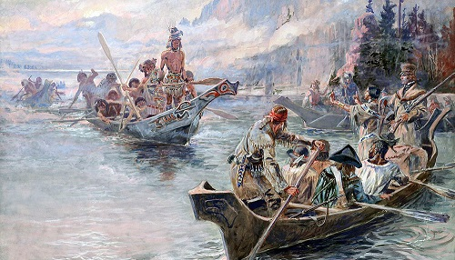

Whitewater rafting has an interesting history that reflects
both the evolution of outdoor recreation and the development of rafting technology. The first recorded descent of a river using a raft was in the late 19th century, and since then it has evolved into a popular adventure sport.
With over 50 years of rafting experience under our belt, Southeastern Expeditions is one of the
oldest whitewater rafting companies. Our journey began with the filming of Deliverance (1972), when our founder,
Claude Terry served as a stunt double for John Voight. With the best-in-class equipment sourced from Warner Bros.
History

Adventure Awaits You

Swifty

Aggressive

Danger

Joy

Peace